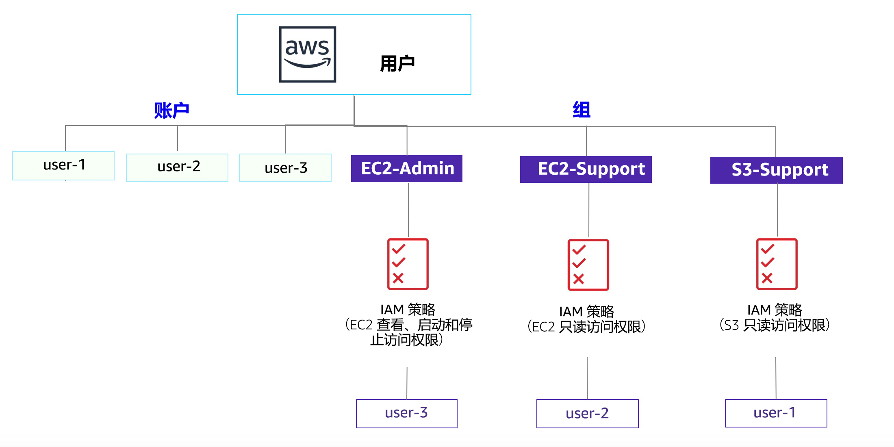

实验 1：AWS IAM 简介
AWS Identity and Access Management (IAM) 是一项 Web 服务，可让 Amazon Web Services (AWS) 客户在 AWS 中管理用户和用户权限。借助 IAM，您可以集中管理用户、访问密钥等安全凭证，以及用于控制用户可以访问哪些 AWS 资源的权限。
涵盖的主题
本实验将演示以下操作：

- 探索预先创建的 IAM 用户和组
- 检查应用于预先创建的组的 IAM 策略
- 在真实场景中将用户添加到启用了特定功能的组中
- 查找并使用 IAM 登录 URL
- 试验各项策略对服务访问的影响
其他 AWS 服务
在完成本实验期间，执行本实验指南中未涵盖的步骤时，您可能会收到错误消息。这些消息不会妨碍您完成本实验。
AWS Identity and Access Management
AWS Identity and Access Management (IAM) 可用于：
- 管理 IAM 用户及其访问权限：您可以创建用户并为其分配单独的安全凭证（访问密钥、密码和多重验证设备）。您可以管理权限，限制用户可执行的操作。
- 管理 IAM 角色及其权限：IAM 角色类似于用户，因为它是一个 AWS 身份，具有确定该身份在 AWS 中可执行和不可执行的操作的权限策略。但是，角色旨在由需要它的任何人承担，而不是唯一地与某个人员关联。
- 管理联合身份用户及其权限：您可以启用联合身份功能来允许企业中的现有用户访问 AWS 管理控制台、调用 AWS API 和访问资源，而不必为各个身份创建 IAM 用户。
持续时间
完成本实验大约需要 40 分钟。
访问 AWS 管理控制台
在这些说明的顶部，单击 Start Lab（启动实验）启动您的实验。
“Start Lab”（启动实验）面板随即会打开，其中显示了实验状态。在打开的 Start Lab（启动实验）对话框中，记下 AWS 区域，因为在本实验的后面您将需要引用它。
请耐心等待，直到您看到 Lab status: ready（实验状态：就绪）消息，然后单击 X 关闭“Start Lab”（启动实验）面板。
在这些说明的顶部，单击 AWS
在您执行此操作后，AWS 管理控制台将会在一个新的浏览器标签页中打开。您将自动登录系统。
提示：如果未打开新的浏览器选项卡，则您的浏览器顶部通常会出现一个横幅或图标，表明您的浏览器阻止该网站打开弹出窗口。单击横幅或图标，然后选择“Allow pop ups”（允许弹出窗口）。
排列 AWS 管理控制台选项卡，使其与这些说明一起显示。理想情况下，您将能够同时看到这两个浏览器选项卡，以便更轻松地执行实验步骤。
任务 1：探索用户和组
在此任务中，您将探索 IAM 中已经为您创建的用户和组。
在 AWS 管理控制台的 Services（服务）菜单中，单击 IAM。
在左侧导航窗格中，单击 Users（用户）。
已为您创建以下 IAM 用户：
- user-1
- user-2
- user-3
单击 user-1。
执行此操作后，您将转至 user-1 的一览页面。其中将显示 Permissions（权限）选项卡。
请注意，user-1 没有任何权限。
单击 Groups（组）选项卡。
user-1 还不是任何组的成员。
单击 Security credentials（安全凭证）选项卡。
user-1 分配有一个控制台密码
在左侧导航窗格中，单击 Groups（组）。
已为您创建以下组：
- EC2-Admin
- EC2-Support
- S3-Support
单击 EC2-Support 组。
执行此操作后，您将转至 EC2-Support 组的一览页面。
单击 Permissions（权限）选项卡。
此组有一个与之关联的托管策略，称为 AmazonEC2ReadOnlyAccess。托管策略是可以附加到 IAM 用户和组的预构建策略（由 AWS 或您的管理员构建）。如果您更新了该策略，对该策略的更改将立即应用于其附加到的所有用户和组。
在 Actions（操作）部分，单击 Show Policy（显示策略）链接。
策略可用于定义特定 AWS 资源所允许的操作或拒绝的操作。此策略授予了“列出和描述有关 EC2、Elastic Load Balancing、CloudWatch 和 Auto Scaling 的信息”的权限。具有该权限的角色可以查看资源，但不能修改它们，因此该权限适合分配给支持角色。
IAM 策略中语句的基本结构为：
- Effect（效果）表明是 Allow（允许）还是 Deny（拒绝）权限。
- Action（操作）指定了可针对 AWS 服务执行的 API 调用（例如，cloudwatch:ListMetrics）。
- Resource（资源）定义了策略规则涵盖的实体范围（例如，特定的 Amazon S3 存储桶或 Amazon EC2 实例，或者 * 意味着任何资源）。
关闭 Show Policy（显示策略）窗口。
在左侧导航窗格中，单击 Groups（组）。
单击 S3-Support 组。
AmazonS3ReadOnlyAccess 策略附加在 S3-Support 组上。
在 Actions（操作）菜单下方，单击 Show Policy（显示策略）链接。
该策略具有获取和列出 Amazon S3 中资源的权限。
关闭 Show Policy（显示策略）窗口。
在左侧导航窗格中，单击 Groups（组）。
单击 EC2-Admin 组。
该组与其他两个组略有不同。它具有内联策略（而不是托管策略），这种策略仅可分配给一个用户或组。内联策略通常用于为一次性情况应用权限。
在 Actions（操作）部分，单击 Show Policy（显示策略），以查看策略。
此策略可授予查看（描述）有关 Amazon EC2 信息的权限，以及启动和停止实例的权限。
在屏幕底部，单击 Cancel（取消），以关闭策略。
业务场景
在本实验的剩余部分，您将使用这些用户和组来启用支持以下业务场景的权限：
贵公司正在越来越多地使用 Amazon Web Services，并且正在使用许多 Amazon EC2 实例和大量 Amazon S3 存储。您希望根据新员工的工作职能授予他们访问权限：
| 用户 | 组中 | 权限 |
|---|---|---|
| user-1 | S3-Support | Amazon S3 的只读访问权限 |
| user-2 | EC2-Support | Amazon EC2 的只读访问权限 |
| user-3 | EC2-Admin | 查看、启动和停止 Amazon EC2 实例 |
任务 2：向组添加多个用户
您最近雇用了 user-1 来担任为 Amazon S3 提供支持的角色。您要将它们添加到 S3-Support 组，以便它们通过附加的 AmazonS3ReadOnlyAccess 策略沿用必要的权限。
您可以忽略完成此任务期间出现的任何“未授权”错误。之所以出现此类错误是因为您的实验账户的权限有限，但它们不会妨碍您完成本实验。
将 user-1 添加到 S3-Support 组
在左侧导航窗格中，单击 Groups（组）。
单击 S3-Support 组。
单击 Users（用户）选项卡。
在 Users（用户）选项卡中，单击 Add Users to Group（向组添加多个用户）。
在 Add Users to Group（向组添加多个用户）窗口中，进行以下配置：
- 选择 user-1。
- 在屏幕底部，单击 Add Users（添加用户）。
在 Users（用户）选项卡中，您将看到 user-1 已添加到该组。
将 user-2 添加到 EC2-Support 组
您雇用了 user-2 来担任为 Amazon EC2 提供支持的角色。
按照与上述步骤相似的步骤将 user-2 添加到 EC2-Support 组。
user-2 现在应该是 EC2-Support 组的一部分。
将 user-3 添加到 EC2-Admin 组
您雇用了 user-3 作为您的 Amazon EC2 管理员，让其管理您的 EC2 实例。
按照与上述步骤相似的步骤将 user-3 添加到 EC2-Admin 组。
user-3 现在应该是 EC2-Admin 组的一部分。
在左侧导航窗格中，单击 Groups（组）。
每个组的“Users”（用户数量）列中应该都会显示 1，这表明每个组中的用户数量。
如果您发现每个组的旁边并未显示 1，请重新按照上述说明操作，确保每个用户都被分配到了相应组，就如“业务场景”部分的表中显示的那样。
任务 3：登录并测试用户
在此任务中，您将测试每个 IAM 用户的权限。
在左侧导航窗格中，单击 Dashboard（控制面板）。
此时将显示 IAM 用户登录链接，它与以下网址类似：https://123456789012.signin.aws.amazon.com/console
该链接可用于登录您当前正在使用的 AWS 账户。
将 IAM 用户登录链接复制到文本编辑器。
打开隐私窗口。
Mozilla Firefox
- 单击屏幕右上方的菜单栏
- 选择 New Private Window（新建隐私窗口）
Google Chrome
- 单击屏幕右上方的省略号
- 单击 New incognito window（打开新的无痕窗口）
Microsoft Edge
- 单击屏幕右上方的省略号
- 单击 New InPrivate window（新建 InPrivate 窗口）
Microsoft Internet Explorer
- 单击 Tools（工具）菜单选项
- 单击 InPrivate Browsing（InPrivate 浏览）
将 IAM users sign-in（IAM 用户登录）链接粘贴到您的隐私窗口，然后按 Enter 键。
现在，您将以 user-1 的身份登录，您雇用该用户作为您的 Amazon S3 存储支持人员。
使用以下信息登录：
- IAM user name（IAM 用户名）：
user-1 - Password（密码）：
Lab-Password1
- IAM user name（IAM 用户名）：
在 Services（服务）菜单中，单击 S3。
单击其中一个存储桶的名称，然后浏览内容。
您的用户属于 IAM 中的 S3-Support 组，因此他们有权查看 Amazon S3 存储桶及其内容的列表。
现在来测试他们是否有权访问 Amazon EC2。
在 Services（服务）菜单中，单击 EC2。
在左侧导航窗格中，单击 Instances（实例）。
您无法看到任何实例！反而会看到消息：You do not have any instances in this region（您在此区域中没有任何实例）。这是因为尚未为您的用户分配使用 Amazon EC2 的权限。
现在，您将以 user-2 的身份登录，您雇用该用户作为您的 Amazon EC2 支持人员。
配置以下设置，将 user-1 退出 AWS 管理控制台：
- 在屏幕顶部，单击 user-1
- 单击 Sign Out（退出）

将 IAM users sign-in（IAM 用户登录）链接粘贴到您的隐私窗口，然后按 Enter 键。
此链接应该会出现在您的文本编辑器中。
使用以下信息登录：
- IAM user name（IAM 用户名）：
user-2 - Password（密码）：
Lab-Password2
- IAM user name（IAM 用户名）：
在 Services（服务）菜单中，单击 EC2。
在左侧导航窗格中，单击 Instances（实例）。
现在，您可以查看 Amazon EC2 实例，因为您具有只读权限。但是，您无法对 Amazon EC2 资源进行任何更改。
如果您没有看到 Amazon EC2 实例，则您的区域可能不正确。在屏幕右上方，展开“Region”（区域）菜单，然后选择您在本实验启动时记下的区域（例如，弗吉尼亚北部）。

您的 EC2 实例应处于选中状态 。如果未选中，则将其选中 。
- 在 Actions（操作）菜单中，依次单击 Instance State（实例状态）> Stop（停止）。
- 在 Stop Instances（停止实例）窗口中，单击 Yes, Stop（是，请停止）。

您将收到以下错误：You are not authorized to perform this operation（您无权执行此操作）。这表明该策略仅允许您查看信息，而不允许您进行更改。
在 Stop Instances（停止实例）窗口中，单击 Cancel（取消）。
接下来，检查 user-2 是否可以访问 Amazon S3。
在 Services（服务）中，单击 S3。
您将收到以下 错误“Access Denied”（访问被拒绝），因为 user-2 无权使用 Amazon S3。
现在，您将以 user-3 的身份登录，您雇用该用户作为您的 Amazon EC2 管理员。
配置以下设置，将 user-2 退出 AWS 管理控制台：
- 在屏幕顶部，单击 user-2
- 单击 Sign Out（退出）

将 IAM users sign-in（IAM 用户登录）链接粘贴到您的隐私窗口，然后按 Enter 键。
再次将登录链接粘贴到您的 Web 浏览器地址栏中。如果它不在剪贴板中，请在您之前将其存储在其中的文本编辑器中进行检索。
使用以下信息登录：
- IAM user name（IAM 用户名）：
user-3 - Password（密码）：
Lab-Password3
- IAM user name（IAM 用户名）：
在 Services（服务）菜单中，单击 EC2。
在左侧导航窗格中，单击 Instances（实例）。
作为 EC2 管理员，您现在应该有权停止 Amazon EC2 实例。
您的 EC2 实例应处于选中状态 。如果未选中，则将其选中 。
如果您没有看到 Amazon EC2 实例，则您的区域可能不正确。在屏幕右上方，展开 Region（区域）菜单，然后选择您在本实验启动时记下的区域（例如，俄勒冈）。
在 Actions（操作）菜单中，依次单击 Instance State（实例状态）> Stop（停止）。
在 Stop Instances（停止实例）窗口中，单击 Yes, Stop（是，请停止）。
该实例将进入停止状态并将关闭。
关闭您的隐私窗口。
实验完成
恭喜！您已完成本实验。
单击此页面顶部的 End Lab（结束实验），然后单击 Yes（是）确认您要结束实验。
此时将显示一个面板，指示“DELETE has been initiated...You may close this message box now.”（删除操作已启动...您现在可以关闭此消息框。）
单击右上角的 X 关闭面板。
结论
恭喜！现在，您已成功完成以下任务：
- 探索预先创建的 IAM 用户和组
- 检查应用于预创建组的 IAM 策略
- 在真实场景中将用户添加到启用了特定功能的组中
- 查找并使用 IAM 登录 URL
- 试验各项策略对服务访问的影响
其他资源
如有反馈、建议或更正意见，请发送电子邮件至：aws-course-feedback@amazon.com